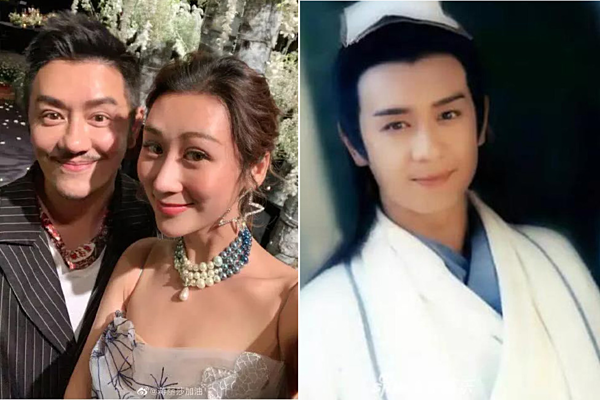

ទោះ
បីជាកើតមកមានរូបសម្បត្តិស្អាតលេចធ្លោហើយក៏ដោយ តែតារាប្រុសចិនមួយចំនួននៅតែជ្រើសយកការវះកាត់កែសម្ផស្សដើម្បីលើកសម្រស់កាន់តែខ្លាំង។ ដើម្បីឈរជើងក្នុងសិល្បៈបាននឹង ក្រៅពីមានទេពកោសល្យឆ្នើមនោះ សិល្បករជាច្រើនក៏ត្រូវទាមទារឲ្យមានរូបសម្បត្តិទាក់ទាញផងដែរ។ អាស្រ័យហេតុនេះហើយ ទោះបីជាតារាខ្លះមានសម្រស់ស្អាតពីអំណោយផលធម្មជាតិហើយក៏ដោយ ក៏នៅតែពឹងផ្អែកលើមុខកាំបិតដើម្បីទទួលបានទម្រង់រឹតតែឥតខ្ចោះ។ ខាងក្រោមនេះគឺជាតារាប្រុសចិនល្បីឈ្មោះមួយចំនួនដែលសឹងតែប្រែទៅជាមនុស្សថ្មីក្រោយកែមុខរួច។
១. Huang Xiaoming
២. Cheney Chen
៣. Harwick Lau
៤. Aaron Yan
៥. Guo Jingming
៦. Benny Chan
៧. Joker Xue
ប្រភព៖ រូបភាពយកពី Facebook